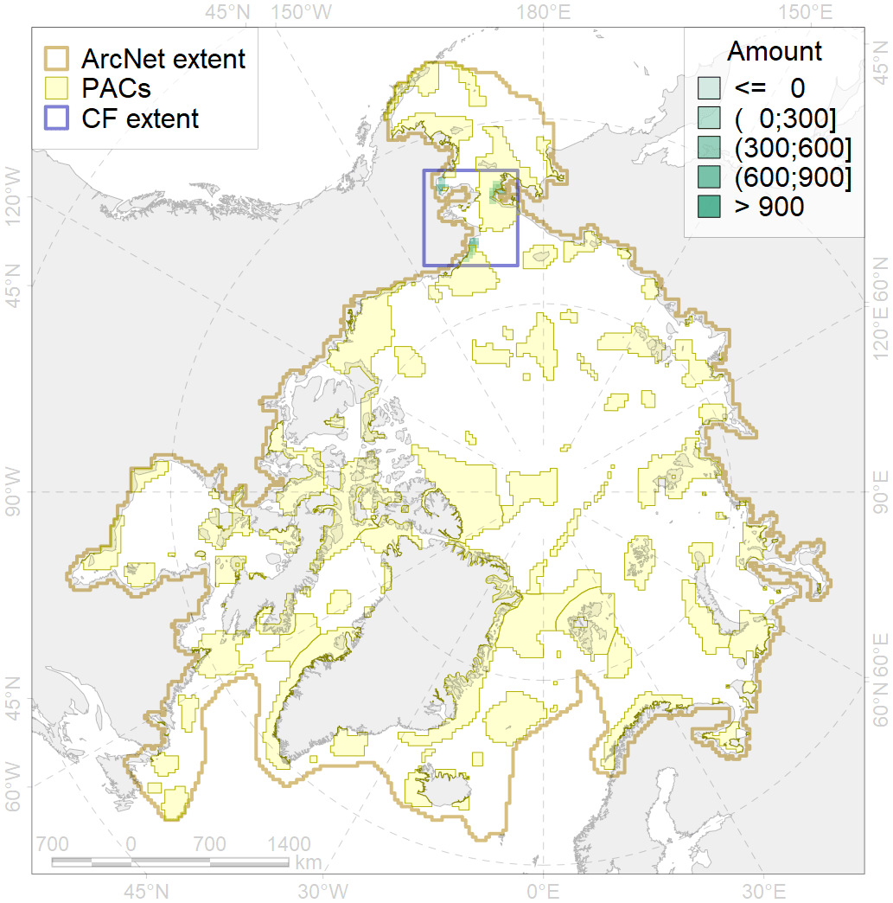
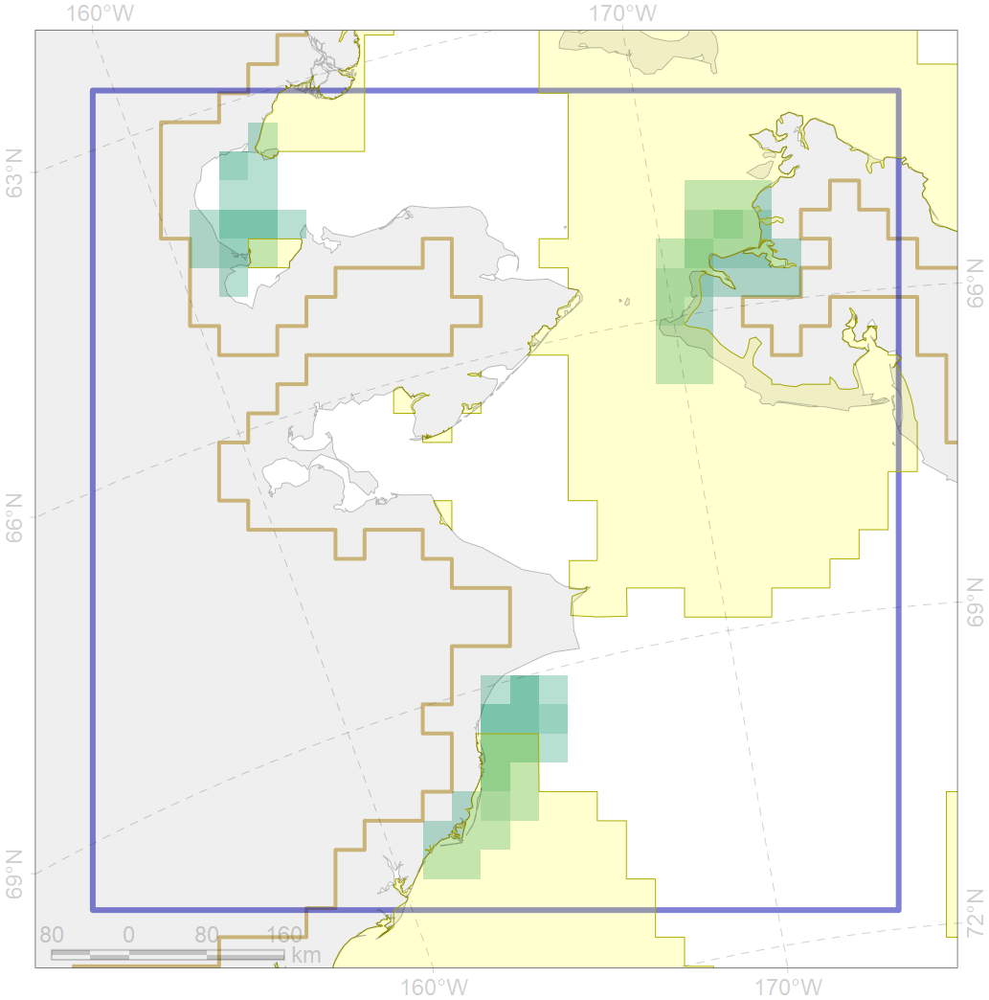

6050

| CF code | 6050 |
| CF name | Spectacled eider (Somateria fischeri) moulting grounds |
| Time Period | 2017 |
| Source(s) | Smith et al 2017 |
| Seasonality | July-August |
| Depth Horizon | <50 m |
| Methodology | Field Data |
| Use Restrictions | Open source |
| Author Name | Gavrilo, Tertitski |
| Notes | |
| Scenario’s Target | 0.36 |
| Target Achievement | 0.512 (Scenario: 142.3%) |
| PAC | Share of the Total Amount within the PAC | Share of the Target Achievement for the ArcNet | PAC’s Contribution to the Target Achievement |
|---|---|---|---|
| 3 | 1.6%1.8% | 1.2%1.2% | 0.8%0.9% |
| 5 | 31.7%37.4% | 88.1%103.9% | 61.9%73.1% |
| 60 | 22.2%22.8% | 32.6%33.6% | 22.9%23.6% |
| inner | 55.5%62.0% | 121.9%138.8% | 85.7%97.5% |
| outer | 44.5%75.6% | 20.4%76.1% | 14.3%53.5% |
| † supplement values are for area consistence whereas principal values are for Accenter compatible gridded stats |